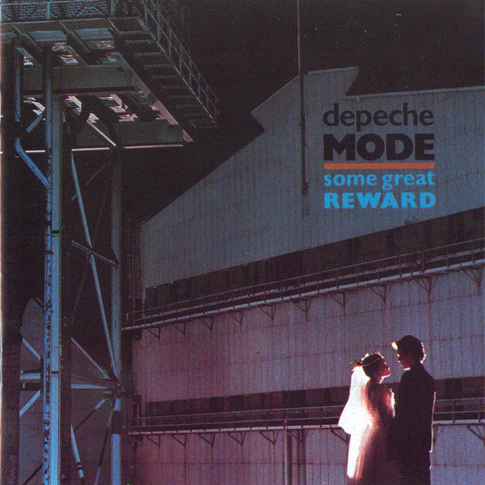

My Favorite Albums
-
Construction Time Again
·1983·
-

Some Great Reward
·1984·
-
Black Celebration
·1986·
-
Music For The Masses
·1987·
-
Violator
·1990·
-
Songs of Faith and Devotion
·1993·
-
Ultra
·1997·
My Favorite Songs
1-Strangelove
Music From The Masses, 1987
2-Master and Servant
Some Great Reward, 1984
3-I Feel You
Songs of Faith and Devotion, 1993
4-Everything Counts
Construction Time Again, 1983